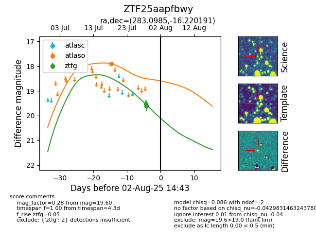

Target ZTF25aapfbwy at 2025-08-02 14:43, see:
FINK: fink-portal.org/ZTF25aapfbwy
Lasair: lasair-ztf.lsst.ac.uk/objects/ZTF25aapfbwy
ALeRCE: alerce.online/object/ZTF25aapfbwy
alt names
ZTF25aapfbwy (ztf,fink)
coordinates:
equatorial (ra, dec) = (283.0985,-16.22019)
galactic (l, b) = (18.5185,-7.52362)
photometry
last atlaso=17.90, ztfg=19.60
1 atlaso, 2 ztfg detections
